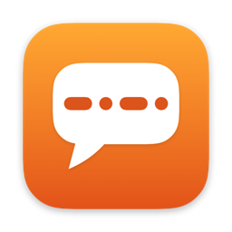
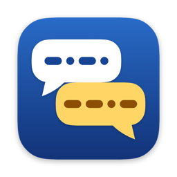
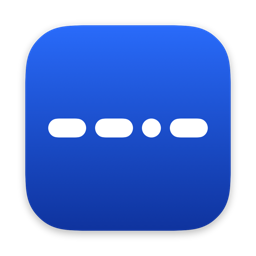
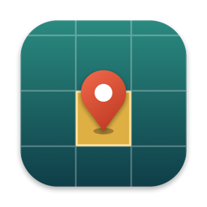
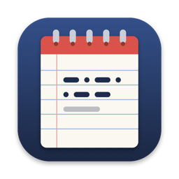
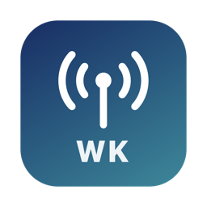
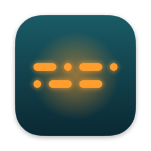

G3AJM
Alastair Moore · small, free tools for radio amateurs, in your browser and on the Mac
Web apps
Free, in your browser on a phone, tablet or computer, with nothing to install. Each works offline after your first visit, and on a phone you can add it to your Home Screen to open it like an app.

HW CPY
Each word or phrase is sent in CW, spoken, then sent again: hear it, check what you copied, and hear it once more knowing what it was. Over time you stop writing things down and start copying in your head.
- Thousands of built-in practice sets (letters, numbers, words, call signs, QSO phrases and courses), or your own text files
- Auto-pause before the answer, Previous to hear it again, shuffle and session length
- Character speed, Farnsworth or Wordsworth spacing, and interval training
- Remembers where you got to in each set
The built-in sets are from Morse Code Ninja by Kurt Zoglmann, WE0DX.

Mock QSO
Realistic CW contacts, generated fresh every time, sent by operators with their own speed and fist. You listen and copy; you don’t reply.
- Ragchews, short QSOs, DX pile-ups, POTA and SOTA activations, and contests including the CWT, SST and MST
- Operators from perfect computer sending to hesitant beginners, on paddles, bugs and straight keys, with mistakes corrected as people do
- Band noise, static, other stations and fading, each of which you can turn off
- Text shown as it’s sent, after each over, or not at all

QRQ Trainer
Callsigns, ham codes, words or character groups sent one at a time at real speed, in the spirit of the classic Rufz trainers. Copy one right and the next is faster; miss it and the next is slower. The web version has the Mac app’s modes, scoring and insights, and keeps your history in your browser.
Mac apps

Locator
Your Maidenhead locator in the menu bar, worked out from your Mac’s location. Click it for:
- 8-character locator, coordinates, and fix accuracy and time (UTC)
- CQ zone and ITU zone
- WAB square in Great Britain, the Isle of Man, Ireland and the Channel Islands
- Click any value to copy it
Everything is worked out on your Mac; your position isn’t sent anywhere.

CW Notebook
A simple note taker for CW operating, in the style of Apple Notes, with a reference panel beside your notes.
- Reference section for QSOs, prosigns, Q-codes and abbreviations: search, then click to insert
- Live UTC clock; click it to insert the time
- Notes are plain Markdown files in iCloud Drive, with folders
QRQ Trainer
High-speed Morse copying practice, in the spirit of the classic Rufz trainers: callsigns, ham codes, words or character groups. Copy one right and the next is faster; miss it and the next is slower.
- Clean, sample-accurate Morse well beyond 600 CPM (120 WPM)
- Scoring, per-attempt speed charts and personal bests
- Per-character insights: what you copy instantly, what needs work, and your common mix-ups
- Realistic generated callsigns or your own list (e.g. MASTER.SCP), plus Q-codes, words and character groups
- Farnsworth spacing, speed in CPM or WPM

WK Console
See your speed live, send messages and typed text, and edit the keyer’s settings, messages and callsigns without paddle commands.
- Large live WPM display, also in the menu bar
- Stored messages on F1–F12, or type to send
- Transcript of what the keyer actually sent, including your paddle sending
- Practice mode: sidetone only, key outputs and PTT off
- Safe writes with automatic backups of the keyer’s memory
An independent project, not affiliated with or endorsed by K1EL Systems.

CW Training Oscillator
A practice oscillator that also teaches you to send well. Hear your paddle with a clean sidetone, then practise sending and see exactly where your spacing drifts.
- Free sending, or targets to send: your callsign, random calls, words and QSO phrases
- Characters and gaps marked as you send; a timing strip shows each gap in units
- Statistics: accuracy, the speed your sending really works out at, and the characters you miss
- Iambic A and B or straight key, 5–60 WPM, Farnsworth spacing
- Keeps sounding your paddle in the background, with a menu bar icon while it does
Installing
Unzip the download and move the app to your Applications folder.
The apps aren’t notarised by Apple, so the first time you open one, macOS will refuse. Go to System Settings › Privacy & Security, scroll down and click Open Anyway. You only need to do this once.